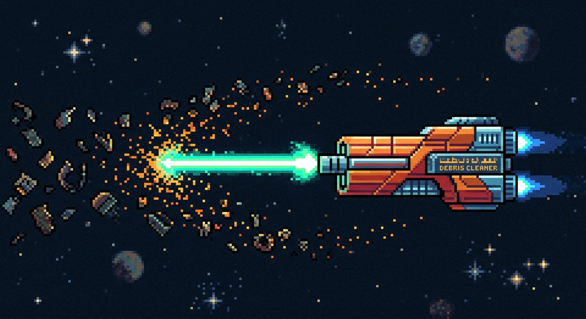

Orbital Debris
What we left behind in Earth's orbit, and how we might clean it up.

Each orange dot is a tracked object around Earth, February 2024. Image: NASA's Scientific Visualization Studio.
What is it?
Orbital debris is any human-made object left in Earth orbit that no longer serves a purpose, such as defunct satellites and rocket parts. NASA's list also includes debris released on purpose during separation or operations, pieces from explosions and collisions, solid rocket motor exhaust, and even tiny flecks of paint.
Why is it a problem?
- About 50,000 large objects are tracked, and spacecraft can steer away from them. As of August 2026, the U.S. Space Surveillance Network had cataloged more than 34,000 objects in orbit.
- NASA estimates about 100 million pieces of debris around a millimeter in size. They are too small to track routinely, but they can still cause damage.
- Millimeter-sized pieces are the biggest mission-ending risk for most robotic spacecraft in low Earth orbit, because they can puncture fuel tanks and pressurized parts.
- Pieces can collide and create even more debris.
The numbers
How fast does it move?
In low Earth orbit, debris travels at about 7 to 8 kilometers per second. When two objects hit, their average relative speed is about 10 km/s and can reach about 15 km/s, more than 10 times the speed of a bullet. That is why even a small fragment carries a lot of energy.
Where is it?
Debris is not spread evenly. Most of it orbits within 2,000 km of Earth's surface, and the amount changes a lot with altitude. Geostationary orbit, near 36,000 km, is generally less crowded, and operators usually move old satellites up to a "graveyard orbit" just above it.
How long does it stay up?
| Altitude | Typical time in orbit |
|---|---|
| Below 600 km | Several years |
| About 800 km | Often centuries |
| Above 1,000 km | 1,000 years or more |
Where did it come from?
Explosions and collisions are the main sources of large debris. Two events added a lot of it: China's deliberate destruction of the Fengyun-1C weather satellite in 2007, and the accidental collision of Iridium 33 and Cosmos 2251 in 2009.
What about people on Earth?
Most debris burns up in the severe heating of reentry. What survives usually lands in an ocean or a sparsely populated area, and the chance of it hitting a person is low.
What about the space station?
The International Space Station normally moves out of the way if a tracked object has a collision chance above 1 in 10,000. It has done this 41 times since 1999. It is also the most heavily shielded spacecraft ever flown, and its critical parts are built to withstand debris up to about 1 cm across. Pieces between 1 and 10 cm pose a small remaining risk.
The best fix is not making more
NASA says the most important step today is to prevent new debris through careful spacecraft design and operations. Cleaning up what is already there is still a hard technical and economic challenge. NASA follows its own standard, NASA-STD-8719.14, which covers debris released in normal operations, accidental explosions and collisions, end-of-mission disposal, and reentry. There is no international treaty on orbital debris, but space agencies coordinate through the Inter-Agency Space Debris Coordination Committee, and the UN has published mitigation guidelines.
How can we get rid of it?
1. Lasers

AI-generated illustration: a laser pushing debris off course.
A laser does not zap debris out of existence. Instead, it vaporizes a tiny part of the surface of a piece of debris, a process called laser ablation. The vaporized material shoots out as a fast plasma plume, and like a small rocket, it pushes the debris off course. Repeated pushes can nudge it away from a predicted collision or into a lower orbit, where it can eventually burn up in the atmosphere. NASA's Office of Technology, Policy, and Strategy found in 2023 that two of the most efficient ways to clean up orbit were removing small debris, 1 to 10 cm in size, and nudging large debris away from predicted collisions, and that high-energy lasers could do both from the ground or from space. Unlike nets and harpoons, which only work on large debris, lasers could in theory handle debris of almost any size. The challenge is that debris comes in odd shapes and spins in different ways, so the push is hard to predict.
2. Robots with nets

AI-generated illustration: a net capturing debris.
In September 2018, a satellite called RemoveDEBRIS fired a net and captured a target that simulated a piece of debris. It was the first demonstration of active debris removal in orbit. The mission, led by the Surrey Space Centre in the UK with Airbus and other partners, also tested cameras and LiDAR so the satellite could see and follow potential debris. In a real mission, the net would stay attached, and the satellite would drag the debris out of orbit so it burns up. The next idea is to add artificial intelligence, so a robot could find debris, choose a target, and approach and catch it on its own. That part is still an idea, not something that has been demonstrated.